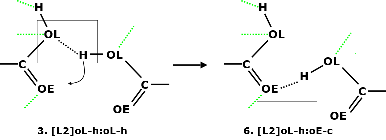

Atomic Interaction Analysis - Results Output¶
This page describes the type of results DL_ANALYSER will produce when carry out atomic interactions.
At the Atomic Interaction Analysis Section in the control file, users would need to select which macro-interactions to look for in the simulation model. Base on the input options, DL_ANALYSER will identify relevant atoms involve in the interactions.
Then, set the criteria in the control file for DL_ANALYSER to decide whether an interaction is considered a valid count. For instance, for the hydrogen bond (HB) interaction, set both the distance (between H and the acceptor) and the angle about the H atom.
If the structural arrangement of these atoms fulfils the criteria and matches a given micro-interaction (described in DANAI), then it will be counted for that interaction.

Average counts and deviations
DL_ANALYSER will read through the trajectories and determine the average counts and the deviations for a range of DANAI interactions that were pre-programmed in DL_ANALYSER.
Example below shows the results output for pure butanoic acid liquid for HB_20_20 (carboxylic-carboxylic) macro-interactions.
...
...
=================== Group A (intra HB_20_20) ================
Interactions involve Chemical Groups between different molecules.
Total sample: 250
Micro-interactions mean deviation
1. [L2]OL-H:OL-H = 21.760000 4.508481
2. [L2]oL-H:OL-h = 537.336000 18.623832
3. [L2]oL-h:oL-h = 705.272000 20.742372
4. [L2]OL-H:OE-C = 1789.120000 32.310271
5. [L2]oL-H:OE-c = 2282.916000 24.782836
6. [L2]oL-h:oE-c = 2613.356000 20.749488
7. [L3]OL-H:OE@OL(H):H-OL = 9.956000 3.044021
8. [L3]oL-h:oE#oL(h):h-oL = 321.708000 14.594202
9. [L3]OL-H:OE@H:OL-H = 12.196000 3.556063
10.[L3[oL-h:oE#h:oL-h = 518.876000 17.769992
11.[L3]OL-H:OE@H:OE-C = 1045.732000 37.470471
12.[L3]oL-h:oE#h:oE-c = 1965.896000 31.293405
13.[J3]C-OE:H(OL):OL-H = 0.608000 0.752553
14.[J3]c-oE:h(oL):oL-h = 12.148000 3.403248
15.[J3]H-OL:H(OL):OL-H = 0.004000 0.063119
16.[J3]h-oL:h(oL):oL-h = 2.756000 1.673459
17.[J3]C-OE:H(OL):OE-C = 3.384000 1.958710
18.[J3]c-oE:h(oL):oE-c = 10.612000 3.328281
...
...
The results are shown as the absolute count values and their corresponding standard deviation, obtained over 250 samples. For comparison across different models, you can divide the count values by the total number of carboxylic groups present in the system model.
The higher the counts the higher the occurence of such interactions. In this case, interactions centered around OE:H being the most common, that is the HB between carbonyl oxygen and the H atom of the hydroxyl group.
You can set the way how DL_ANALYSER select the atoms for analysis. The example analysis shown above do not take into account the intra-interaction, that is, within the same molecule. See the relevant portion of the control file below. In this case, the HB interaction between the oxygen and the hydrogen within the same carboxylic group is ignored.
--- Atom Range Definition and overall conditions for analysis as below.
1 47026 * Range of atom index (Group A). This must always define.
none * Range of atom index (Group B), if applicable. Or put 'none'.
1 * Analysis type: 1=atom-based 2 = molecule-base
3 * Atom-based analysis criteria: 1=all 2= within molecules 3= between molecules
none * Molecule-base analysis: name and no of atoms in Group A (MOLECULE A1)
none * Molecule-base analysis: name and no of atoms in Group A (MOLECULE A2, or 'none')
none * Molecule-base analysis: name and no of atoms in Group B (MOLECULE B1, or 'none')
none * For molecule-base analysis: name and no of atoms in Group B (MOLECULE B2, or 'none')
all * Range of MD time (ps) samples: t1 t2 (put 'all' if all samples to be included).
1 * Assign all atoms with unit mass = 1.0 (1=yes, 0=no)
0.0 0.0 0.0 * Translation marix on coordinates:x y z (assume orthorhombic cell)
auto * Periodic boundary? 0=no, other number = type of box (DLPOLY), auto = obtain from HISTORY
40.0 0.000 0.0000 * Cell vector a (x, y, z)
0.000 40.0 0.0000 * Cell vector b (x, y, z)
0.0 0.000 40.0 * Cell vector c (x, y, z)
0 * Exclude any atoms for analysis? 0=no, or Number of EXCLUDE statements shown below.
…
…
{kind=link}
Correlation coefficients
Next, DL_ANALYSER will determine the correlation coefficient, R, for each combination pairs of interactions, to find out the relationships among each other. Below show a truncated portion of the correlation coefficient, in the form of a table and the numbers match with the micro-interactions shown above.
Correlation coefficient (Pearson), Cij
1 2 3 4 5 6 7 8 9
----------------------------------------------------------------------
1 | 1.000 0.163 0.122 -0.124 -0.185 -0.320 0.706 -0.004 0.785
2 | 0.163 1.000 0.793 -0.620 -0.392 -0.761 0.088 0.577 0.098
3 | 0.122 0.793 1.000 -0.789 -0.570 -0.552 0.029 0.440 0.070
4 | -0.124 -0.620 -0.789 1.000 0.869 0.613 -0.012 -0.245 -0.082
5 | -0.185 -0.392 -0.570 0.869 1.000 0.536 -0.096 -0.075 -0.119
6 | -0.320 -0.761 -0.552 0.613 0.536 1.000 -0.218 -0.348 -0.248
7 | 0.706 0.088 0.029 -0.012 -0.096 -0.218 1.000 -0.006 0.591
8 | -0.004 0.577 0.440 -0.245 -0.075 -0.348 -0.006 1.000 -0.076
9 | 0.785 0.098 0.070 -0.082 -0.119 -0.248 0.591 -0.076 1.000
10 | 0.091 0.512 0.755 -0.488 -0.272 -0.240 -0.016 0.230 0.126
...
...
To use the table, you can find any interaction relationships for a given interaction with respect to all other interactions, by reading across the rows or columns for that interaction.
To determine a particular set of relationship, say interaction 4 and interaction 5, the intersection is the corresponding correlation coefficient, which is +0.869.
Note
It does not matter which interaction numbers refer to which position, either row or column, it will always get a consistent value.
In general:
A positive value gives a positive correlation, that is, the formation of one interaction also corresponds to the formation of the second interaction and vice versa.
A negative value gives a negative correlation, that is, the formation of one interaction is at the expense of the reduction of the other interaction and vice versa.
The magnitude of the value indicates the strength of such correlation, which can be any value between 1 and 0, inclusive.
A low value of R indicates a negligible correlation. It means the behaviour of one interaction is not influenced by the other interaction and vice versa.
For example, for interactions 2 and 3, they are highly correlated, with R = +0.793. This is not surprising because interaction 3 is in fact a ‘superset’ that will also include interaction 2. This is also the reason interaction 3 will almost always greater (in unusual circumstances, at least equal) than interaction 2!
On the other hand, interactions 3 and 6 has a negative correlation with R = -0.552. This means one will form at the expense of the other. Diagram below show one such possible scenerio:
{kind=link}
Diagram on the left shows a sketch of two interacting carboxylic groups to give interaction 3. However, there is a propensity for the interacting H atom to move slightly (curved arrow) towards the OE (carbonyl oxygen) atom to form interaction 6.